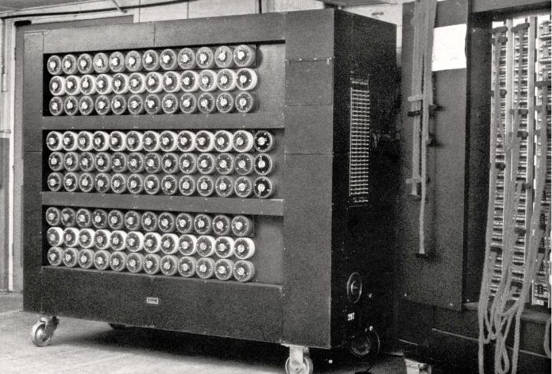
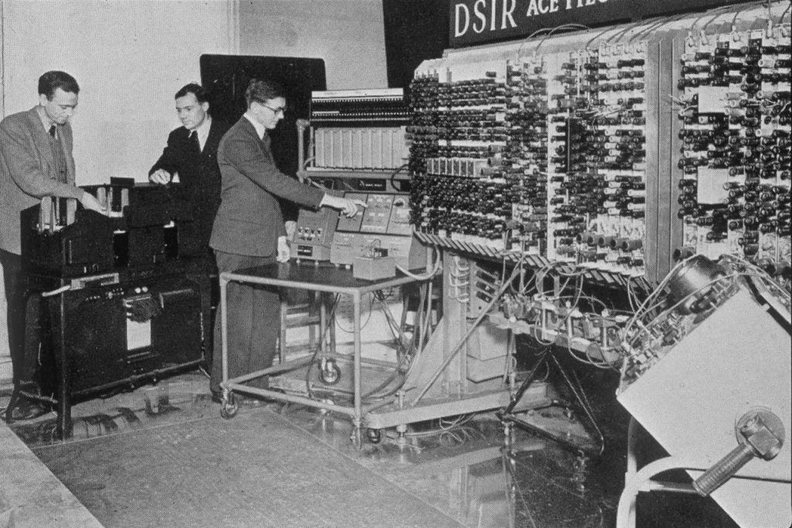

Biografia de Alan Turing
Alan Turing (1912-1954) foi um matemático britânico, pioneiro da computação e considerado hoje o pai da ciência computacional e da inteligência artificial.
Turing liderou um grupo de matemáticos e criptógrafos que decifraram os códigos que os alemães utilizavam para enviar mensagens aos submarinos durante a Segunda Guerra Mundial.
Alan Mathison Turing, conhecido como Alan Turing, nasceu em Paddington, Londres, Inglaterra, no dia 23 de junho de 1912. Filho de Ethel Sara Stoney e de Julius Mathison, membro britânico do Serviço Civil Indiano.
Formação
Turing estudou na Hazlehurst Preparatory School. Com 14 anos ingressou na tradicional Sherbourne School e desde cedo mostrou sua privilegiada inteligência e o interesse pelas ciências e pela lógica. Com 15 anos já resolvia problemas matemáticos complexos, sem ainda ter estudado cálculo.
Com 16 anos conheceu Christopher Morcom, um aluno da escola, por quem sentiu atração, descobrindo-se homossexual. Os dois trabalharam juntos em experiências científicas, mas em fevereiro de 1930, Marcom morreu repentinamente.om 19 anos, Turing foi admitido no King’s College de Cambridge, onde se graduou em matemática com honras, em 1934. No ano seguinte, frequentou o curso de Max Newman sobre os fundamentos da matemática.
Em 1936, Turing ingressou no curso de graduação da Universidade de Princeton, onde publicou diversos trabalhos sob a supervisão de Church. Em 1938 obteve seu PhD e retornou para a Inglaterra.
 
Invenção de Alan Turing
Um dos trabalhos de Turing foi “On Computable Numbers” (1936), com uma aplicação ao Entscheidungsproblem (um problema da lógica simbólica que consiste em achar um algoritmo genérico para determinar se um dado enunciado da lógica de primeira ordem pode ser provado).
Em seu artigo revolucionário que inaugurava os fundamentos da computação, Turing concluiu que seria possível criar uma máquina automatizada, que materializasse fisicamente a lógica humana e solucionasse qualquer cálculo representado no formato de um algoritmo.
Surgiram aí as raízes do primeiro computador: um sistema que, sozinho, realizaria tarefas determinadas pelo programa com o qual ele está equipado. A agora chamada de “Máquina de Turing” se tornou um protótipo dos computadores modernos.
Morte
Em 1952, Alan Turing teve sua carreira abalada quando foi acusado de praticar “atos homossexuais” – um crime segundo as leis inglesas da época. Declarado culpado, poderia deixar de cumprir a pena caso aceitasse adotar um tratamento para “seu problema”: a castração química. O britânico recusou a prisão e se submeteu a injeções de estrogênio. Com seu prestígio relegado, Turing foi impedido de continuar contribuindo com as atividades do governo e viu todos os seus privilégios de segurança concedidos após a Guerra serem cancelados.
Alan Turing foi encontrado morto em sua cama. A princípio, acreditou-se que teria sido suicídio pela ingestão de cianeto, mas estudiosos concluíram que o envenenamento não passou de um acidente causado pelo uso de elementos químicos em experimentos caseiros.Alan Turing faleceu em Wilmslow, Cheshire, Inglaterra, no dia 7 de junho de 1954.
Uma campanha de perdão ao matemático começou na internet, exigindo um pedido póstumo por parte do governo britânico. Em 2009, o então primeiro-ministro inglês Gordon Brown, se desculpou em nome do governo, e no dia 24 de dezembro de 2013, Turing foi perdoado postumamente da condenação por prática homossexual, pela rainha Elizabeth II.